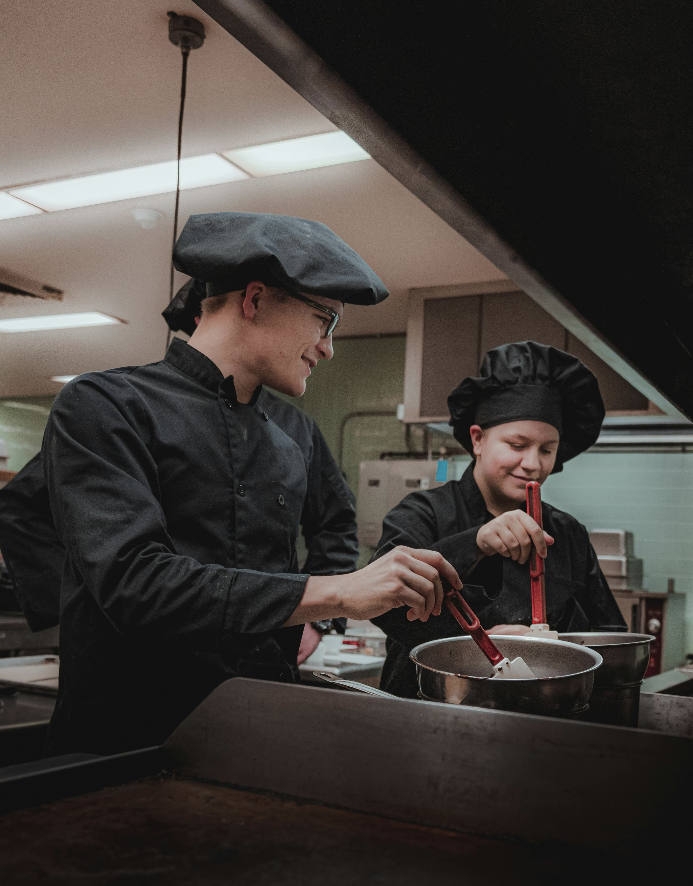

Our chef's specials


About us
Avevamo parlato due volte E ci amavamo già da trent'anni Ma noi avevamo vent'anni Avevamo vent'anni Di piante, di feste e di botte Lei che ha paura dei ragni Io avevo paura degli anni C'eravamo solo ingannati E se non ho più niente da dirti Come puoi capirmi? Io non ci riesco Se questa vita la dedico a te Starò attento ad uscire la sera E se incontro uno stronzo che ha in mano un coltello Stavolta mi fermerei Gli avrei spaccato il naso, sai Ma ti vedo stasera E non fai l'infermiera
